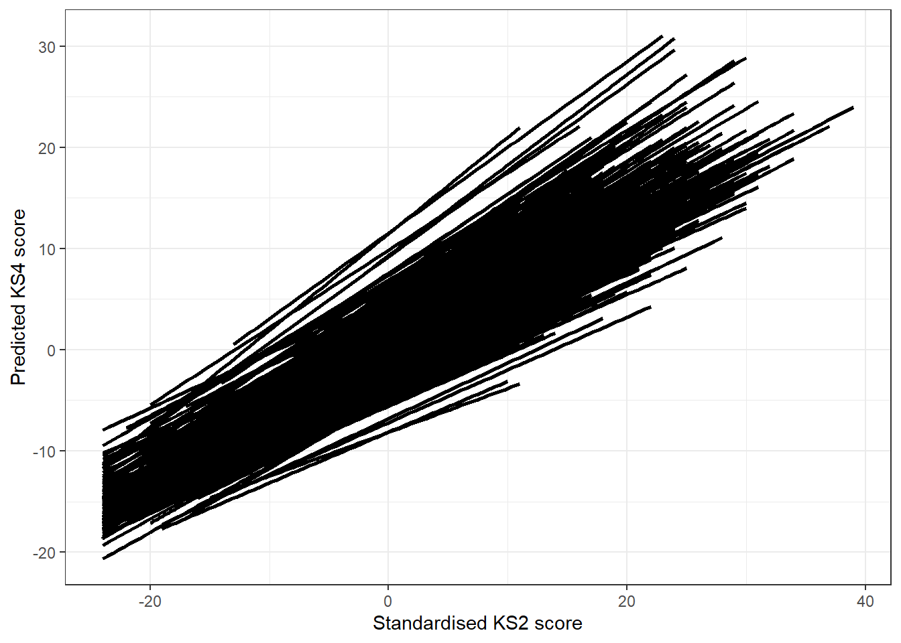
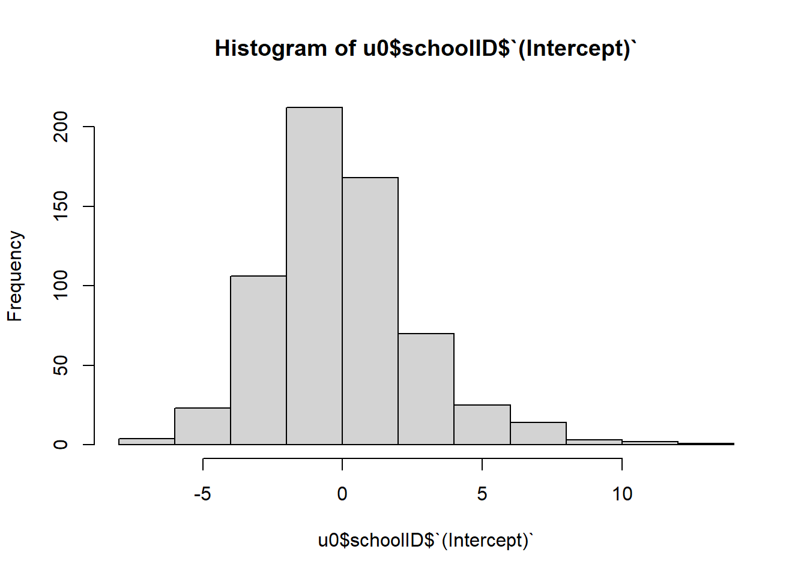
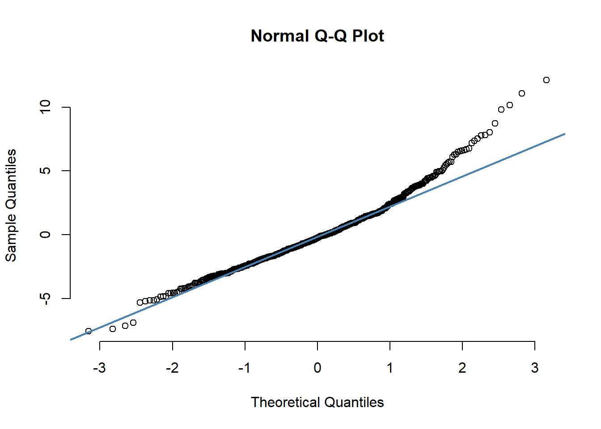
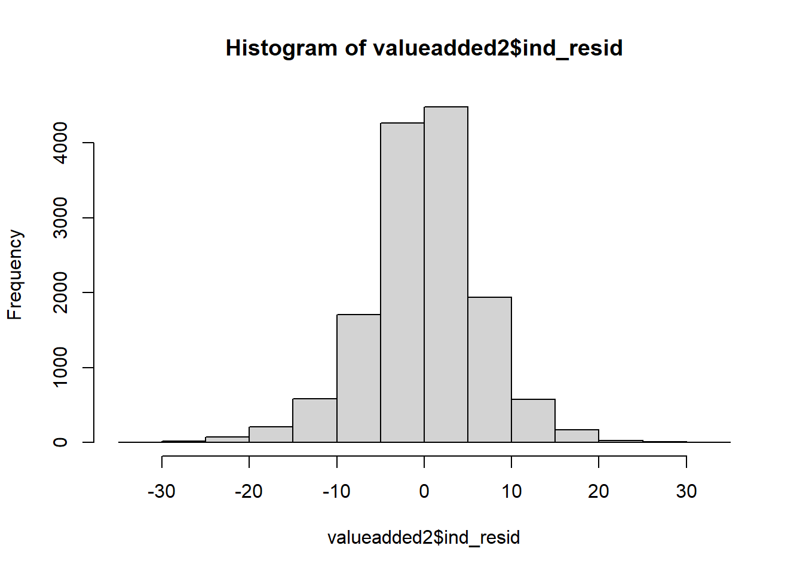
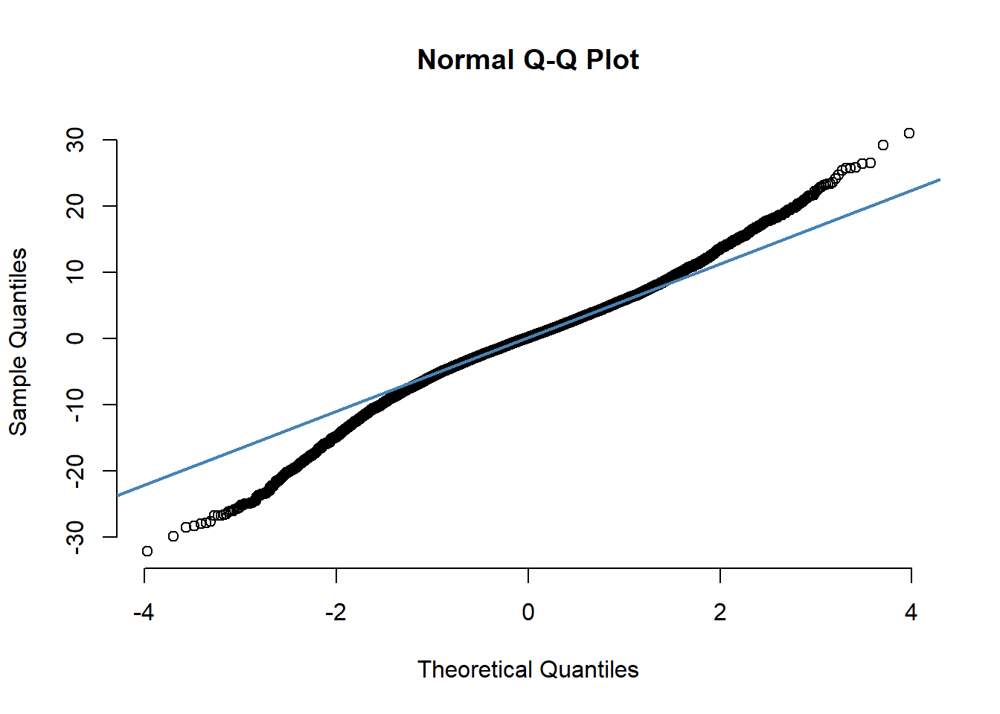
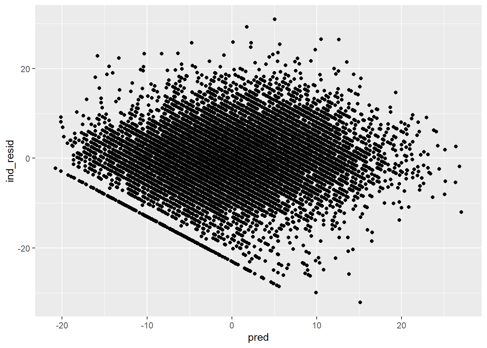

Random slopes model
Following up from practical 2, we will continue to build up our
multilevel model for school effects by adding a random slope for prior
attainment.
Task 1: Fit a random slopes model
We have theoretical reasons to believe that the effect of KS2 varies
across schools, since some schools do seem to make their pupils progress
more than others. To test this hypothesis, we fit a
random slopes model by running the following code:
m1_rs <- lmer(ks4stand ~ as.vector(scale(ks2stand))+
(1 + as.vector(scale(ks2stand))|schoolID), data = valueadded, REML = F)
# Note that KS2 have been added like this "as.vector(scale(ks2stand))". This is done to prevent a convergence error. The function "scale" rescales KS2 scores to units of standard deviation, i.e. it "standardises".
summary(m1_rs)
## Linear mixed model fit by maximum likelihood ['lmerMod']
## Formula:
## ks4stand ~ as.vector(scale(ks2stand)) + (1 + as.vector(scale(ks2stand)) |
## schoolID)
## Data: valueadded
##
## AIC BIC logLik deviance df.resid
## 94083.5 94128.8 -47035.7 94071.5 14046
##
## Scaled residuals:
## Min 1Q Median 3Q Max
## -4.9474 -0.5315 0.0255 0.5764 4.5486
##
## Random effects:
## Groups Name Variance Std.Dev. Corr
## schoolID (Intercept) 8.964 2.994
## as.vector(scale(ks2stand)) 1.295 1.138 0.50
## Residual 43.160 6.570
## Number of obs: 14052, groups: schoolID, 628
##
## Fixed effects:
## Estimate Std. Error t value
## (Intercept) -0.11737 0.13375 -0.877
## as.vector(scale(ks2stand)) 6.42098 0.07797 82.353
##
## Correlation of Fixed Effects:
## (Intr)
## as.vct((2)) 0.282
Question
1.1. What is the correlation between the intercept and the slope?
1.2. What sort of pattern is it?
Task 2: Compare the fit of the random slopes model to the random
intercepts model
To compare the random intercepts models with the
random slopes model, we first run the random intercepts
model again
m1 <- lmer(ks4stand ~ ks2stand + (1|schoolID), data = valueadded, REML = F)
anova(m1, m1_rs)
## Data: valueadded
## Models:
## m1: ks4stand ~ ks2stand + (1 | schoolID)
## m1_rs: ks4stand ~ as.vector(scale(ks2stand)) + (1 + as.vector(scale(ks2stand)) | schoolID)
## npar AIC BIC logLik deviance Chisq Df Pr(>Chisq)
## m1 4 94184 94215 -47088 94176
## m1_rs 6 94083 94129 -47036 94071 104.87 2 < 2.2e-16 ***
## ---
## Signif. codes: 0 '***' 0.001 '**' 0.01 '*' 0.05 '.' 0.1 ' ' 1
And then we compare using the anova function in R:
anova(m1, m1_rs)
## Data: valueadded
## Models:
## m1: ks4stand ~ ks2stand + (1 | schoolID)
## m1_rs: ks4stand ~ as.vector(scale(ks2stand)) + (1 + as.vector(scale(ks2stand)) | schoolID)
## npar AIC BIC logLik deviance Chisq Df Pr(>Chisq)
## m1 4 94184 94215 -47088 94176
## m1_rs 6 94083 94129 -47036 94071 104.87 2 < 2.2e-16 ***
## ---
## Signif. codes: 0 '***' 0.001 '**' 0.01 '*' 0.05 '.' 0.1 ' ' 1
Question:
2.1. Is the random slope specification a significant addition to the
model?
The results indicate that, even though more complex (2 extra
parameters), the random slopes model has a significantly
better fit than the random intercepts model.
Task 3: Visualising results
To plot the school predicted lines, we can retrieve the fitted values
from the model m1_rs, as such:
valueadded2 <- filter(valueadded, !is.na(ks4stand) & !is.na(ks2stand)) # this filter is necessary to avoid issues with missing values
valueadded2$pred_rs<-fitted(m1_rs)
Then we can plot the predicted school results by typing:
school_plot_rs<-ggplot(valueadded2, aes(x=ks2stand, y=pred_rs, group=factor(schoolID))) +
geom_smooth(method="lm", colour="black") +
xlab("Standardised KS2 score") +
ylab("Predicted KS4 score") +
theme_bw()
school_plot_rs

Voilà! School predicted scores have varying slopes for the
relationship between KS2 and GCSE scores. You can see that pupils in
some schools make more progress than others on average and some make
less.
Question
3.1. What sort of pattern is this?
Task 4: Checking assumptions
We will check the assumptions for the random intercepts
model (m1).
You can also plot the higher-level (school) residuals to check for
normality
u0 <- ranef(m1, condVar = TRUE) # These are the residuals from model "m1"
hist(u0$schoolID$`(Intercept)`) # Histogram for school residuals

qqnorm(u0$schoolID$`(Intercept)`, pch = 1, frame = FALSE) # Q-Q plot for school residuals
qqline(u0$schoolID$`(Intercept)`, col = "steelblue", lwd = 2) # Q-Q plot for school residuals

You can also plot individual-level to check for normality
valueadded2$ind_resid <- residuals(m1)
hist(valueadded2$ind_resid)

qqnorm(valueadded2$ind_resid, pch = 1, frame = FALSE)
qqline(valueadded2$ind_resid, col = "steelblue", lwd = 2)

And finally, you can plot individual-level residuals against the
predicted values:
valueadded2$pred <- fitted(m1) # retrieve predicted values from model m1
homoscedasticity <- ggplot(valueadded2, aes(y = ind_resid, x = pred)) + geom_point()
homoscedasticity

Questions
4.1. Is the normality assumption reasonable at the school level?
4.2. Is the normality assumption reasonable at the pupil level?
4.3. Is it reasonable to assume homoscedasticity?
LS0tDQp0aXRsZTogIkludHJvIHRvIE1MTTogUHJhY3RpY2FsIDQiDQphdXRob3I6IFBhdHJpY2lvIFRyb25jb3NvIGFuZCBBbmEgTW9yYWxlcy1Hw7NtZXoNCmRhdGU6ICJKdW5lIDIwMjMiDQpvdXRwdXQ6IA0KICBodG1sX2RvY3VtZW50Og0KICAgIGNvZGVfZG93bmxvYWQ6IHllcw0KICAgIGhpZ2hsaWdodGVyOiBudWxsDQogICAgdGhlbWU6IGNvc21vDQogICAgdG9jOiB5ZXMNCiAgICB0b2NfZGVwdGg6IDQNCiAgICB0b2NfZmxvYXQ6IHllcw0KICAgIGZvbnRzaXplOiAxMnB0DQotLS0NCmBgYHtyIHNldHVwLCBpbmNsdWRlPUZBTFNFfQ0Ka25pdHI6Om9wdHNfY2h1bmskc2V0KGVjaG8gPSBUUlVFKQ0KbGlicmFyeShoYXZlbikNCmxpYnJhcnkobG1lNCkNCmxpYnJhcnkoZ2dwbG90MikNCmxpYnJhcnkoZHBseXIpDQp5cGU8LXJlYWRfc2F2KCJodHRwczovL2dpdGh1Yi5jb20vQS1tb3JhL01MTV9zdW1tZXItc2Nob29sL3Jhdy9tYWluL2RhdGEvbHN5cGVfMTUwMDBfZmluYWxfMjAxMV8wNV8wNC5zYXYiKQ0KdmFsdWVhZGRlZCA8LSBzZWxlY3QoeXBlLCBwdXBpbGlkLCBzY2hvb2xJRCwgDQogICAgICAgICAgICAgICAgICAgICBrczJzdGFuZCwga3M0c3RhbmQsIGdlbmRlciwgDQogICAgICAgICAgICAgICAgICAgICBmc20pDQpgYGANCg0KIyBSYW5kb20gc2xvcGVzIG1vZGVsDQoNCkZvbGxvd2luZyB1cCBmcm9tIHByYWN0aWNhbCAyLCB3ZSB3aWxsIGNvbnRpbnVlIHRvIGJ1aWxkIHVwIG91ciBtdWx0aWxldmVsIG1vZGVsIGZvciBzY2hvb2wgZWZmZWN0cyBieSBhZGRpbmcgYSByYW5kb20gc2xvcGUgZm9yIHByaW9yIGF0dGFpbm1lbnQuDQoNCioqKg0KDQojIFRhc2sgMTogRml0IGEgcmFuZG9tIHNsb3BlcyBtb2RlbA0KDQpXZSBoYXZlIHRoZW9yZXRpY2FsIHJlYXNvbnMgdG8gYmVsaWV2ZSB0aGF0IHRoZSBlZmZlY3Qgb2YgS1MyIHZhcmllcyBhY3Jvc3Mgc2Nob29scywgc2luY2Ugc29tZSBzY2hvb2xzIGRvIHNlZW0gdG8gbWFrZSB0aGVpciBwdXBpbHMgcHJvZ3Jlc3MgbW9yZSB0aGFuIG90aGVycy4gVG8gdGVzdCB0aGlzIGh5cG90aGVzaXMsIHdlIGZpdCBhIGByYW5kb20gc2xvcGVzIG1vZGVsYCBieSBydW5uaW5nIHRoZSBmb2xsb3dpbmcgY29kZTogDQoNCmBgYHtyLCB3YXJuaW5nPUYsIG1lc3NhZ2U9Rn0NCg0KbTFfcnMgPC0gbG1lcihrczRzdGFuZCB+IGFzLnZlY3RvcihzY2FsZShrczJzdGFuZCkpKw0KICAgICAgICAgICAgICAoMSArIGFzLnZlY3RvcihzY2FsZShrczJzdGFuZCkpfHNjaG9vbElEKSwgZGF0YSA9IHZhbHVlYWRkZWQsIFJFTUwgPSBGKQ0KDQojIE5vdGUgdGhhdCBLUzIgaGF2ZSBiZWVuIGFkZGVkIGxpa2UgdGhpcyAiYXMudmVjdG9yKHNjYWxlKGtzMnN0YW5kKSkiLiBUaGlzIGlzIGRvbmUgdG8gcHJldmVudCBhIGNvbnZlcmdlbmNlIGVycm9yLiBUaGUgZnVuY3Rpb24gInNjYWxlIiByZXNjYWxlcyBLUzIgc2NvcmVzIHRvIHVuaXRzIG9mIHN0YW5kYXJkIGRldmlhdGlvbiwgaS5lLiBpdCAic3RhbmRhcmRpc2VzIi4NCg0Kc3VtbWFyeShtMV9ycykNCmBgYA0KDQojIyMgUXVlc3Rpb24NCg0KMS4xLiBXaGF0IGlzIHRoZSBjb3JyZWxhdGlvbiBiZXR3ZWVuIHRoZSBpbnRlcmNlcHQgYW5kIHRoZSBzbG9wZT8NCg0KMS4yLiBXaGF0IHNvcnQgb2YgcGF0dGVybiBpcyBpdD8NCg0KKioqDQoNCiMgVGFzayAyOiBDb21wYXJlIHRoZSBmaXQgb2YgdGhlIHJhbmRvbSBzbG9wZXMgbW9kZWwgdG8gdGhlIHJhbmRvbSBpbnRlcmNlcHRzIG1vZGVsDQoNClRvIGNvbXBhcmUgdGhlIGByYW5kb20gaW50ZXJjZXB0cyBtb2RlbHNgIHdpdGggdGhlIGByYW5kb20gc2xvcGVzIG1vZGVsYCwgd2UgZmlyc3QgcnVuIHRoZSByYW5kb20gaW50ZXJjZXB0cyBtb2RlbCBhZ2Fpbg0KDQpgYGB7ciwgd2FybmluZz1GLCBtZXNzYWdlPUZ9DQptMSA8LSBsbWVyKGtzNHN0YW5kIH4ga3Myc3RhbmQgKyAoMXxzY2hvb2xJRCksIGRhdGEgPSB2YWx1ZWFkZGVkLCBSRU1MID0gRikNCmFub3ZhKG0xLCBtMV9ycykNCmBgYA0KDQpBbmQgdGhlbiB3ZSBjb21wYXJlIHVzaW5nIHRoZSBgYW5vdmFgIGZ1bmN0aW9uIGluIFI6DQoNCmBgYHtyLCB3YXJuaW5nPUYsIG1lc3NhZ2U9Rn0NCmFub3ZhKG0xLCBtMV9ycykNCmBgYA0KDQojIyMgUXVlc3Rpb246DQoNCjIuMS4gSXMgdGhlIHJhbmRvbSBzbG9wZSBzcGVjaWZpY2F0aW9uIGEgc2lnbmlmaWNhbnQgYWRkaXRpb24gdG8gdGhlIG1vZGVsPw0KDQpUaGUgcmVzdWx0cyBpbmRpY2F0ZSB0aGF0LCBldmVuIHRob3VnaCBtb3JlIGNvbXBsZXggKDIgZXh0cmEgcGFyYW1ldGVycyksIHRoZSBgcmFuZG9tIHNsb3BlcyBtb2RlbGAgaGFzIGEgc2lnbmlmaWNhbnRseSBiZXR0ZXIgZml0IHRoYW4gdGhlIGByYW5kb20gaW50ZXJjZXB0cyBtb2RlbGAuDQoNCioqKg0KDQojIFRhc2sgMzogVmlzdWFsaXNpbmcgcmVzdWx0cw0KDQpUbyBwbG90IHRoZSBzY2hvb2wgcHJlZGljdGVkIGxpbmVzLCB3ZSBjYW4gcmV0cmlldmUgdGhlIGZpdHRlZCB2YWx1ZXMgZnJvbSB0aGUgbW9kZWwgYG0xX3JzYCwgYXMgc3VjaDoNCg0KYGBge3IsIHdhcm5pbmc9RiwgbWVzc2FnZT1GfQ0KdmFsdWVhZGRlZDIgPC0gZmlsdGVyKHZhbHVlYWRkZWQsICFpcy5uYShrczRzdGFuZCkgJiAhaXMubmEoa3Myc3RhbmQpKSAjIHRoaXMgZmlsdGVyIGlzIG5lY2Vzc2FyeSB0byBhdm9pZCBpc3N1ZXMgd2l0aCBtaXNzaW5nIHZhbHVlcw0KDQp2YWx1ZWFkZGVkMiRwcmVkX3JzPC1maXR0ZWQobTFfcnMpDQpgYGANCg0KVGhlbiB3ZSBjYW4gcGxvdCB0aGUgcHJlZGljdGVkIHNjaG9vbCByZXN1bHRzIGJ5IHR5cGluZzoNCg0KYGBge3IsIHdhcm5pbmc9RiwgbWVzc2FnZT1GfQ0Kc2Nob29sX3Bsb3RfcnM8LWdncGxvdCh2YWx1ZWFkZGVkMiwgYWVzKHg9a3Myc3RhbmQsIHk9cHJlZF9ycywgZ3JvdXA9ZmFjdG9yKHNjaG9vbElEKSkpICsgDQogIGdlb21fc21vb3RoKG1ldGhvZD0ibG0iLCBjb2xvdXI9ImJsYWNrIikgKw0KICB4bGFiKCJTdGFuZGFyZGlzZWQgS1MyIHNjb3JlIikgKw0KICB5bGFiKCJQcmVkaWN0ZWQgS1M0IHNjb3JlIikgKw0KICB0aGVtZV9idygpDQoNCnNjaG9vbF9wbG90X3JzDQpgYGANCg0KVm9pbMOgISBTY2hvb2wgcHJlZGljdGVkIHNjb3JlcyBoYXZlIHZhcnlpbmcgc2xvcGVzIGZvciB0aGUgcmVsYXRpb25zaGlwIGJldHdlZW4gS1MyIGFuZCBHQ1NFIHNjb3Jlcy4gWW91IGNhbiBzZWUgdGhhdCBwdXBpbHMgaW4gc29tZSBzY2hvb2xzIG1ha2UgbW9yZSBwcm9ncmVzcyB0aGFuIG90aGVycyBvbiBhdmVyYWdlIGFuZCBzb21lIG1ha2UgbGVzcy4gDQoNCiMjIyBRdWVzdGlvbg0KDQozLjEuIFdoYXQgc29ydCBvZiBwYXR0ZXJuIGlzIHRoaXM/DQoNCjxicj4NCg0KKioqDQoNCiMgVGFzayA0OiBDaGVja2luZyBhc3N1bXB0aW9ucw0KDQpXZSB3aWxsIGNoZWNrIHRoZSBhc3N1bXB0aW9ucyBmb3IgdGhlIGByYW5kb20gaW50ZXJjZXB0c2AgbW9kZWwgKCoqbTEqKikuIA0KDQpZb3UgY2FuIGFsc28gcGxvdCB0aGUgaGlnaGVyLWxldmVsIChzY2hvb2wpIHJlc2lkdWFscyB0byBjaGVjayBmb3Igbm9ybWFsaXR5DQoNCmBgYHtyLCB3YXJuaW5nPUYsIG1lc3NhZ2U9Rn0NCnUwIDwtIHJhbmVmKG0xLCBjb25kVmFyID0gVFJVRSkgIyBUaGVzZSBhcmUgdGhlIHJlc2lkdWFscyBmcm9tIG1vZGVsICJtMSINCg0KaGlzdCh1MCRzY2hvb2xJRCRgKEludGVyY2VwdClgKSAjIEhpc3RvZ3JhbSBmb3Igc2Nob29sIHJlc2lkdWFscw0KDQpxcW5vcm0odTAkc2Nob29sSUQkYChJbnRlcmNlcHQpYCwgcGNoID0gMSwgZnJhbWUgPSBGQUxTRSkgIyBRLVEgcGxvdCBmb3Igc2Nob29sIHJlc2lkdWFscw0KcXFsaW5lKHUwJHNjaG9vbElEJGAoSW50ZXJjZXB0KWAsIGNvbCA9ICJzdGVlbGJsdWUiLCBsd2QgPSAyKSAjIFEtUSBwbG90IGZvciBzY2hvb2wgcmVzaWR1YWxzDQpgYGANCg0KWW91IGNhbiBhbHNvIHBsb3QgaW5kaXZpZHVhbC1sZXZlbCB0byBjaGVjayBmb3Igbm9ybWFsaXR5DQoNCmBgYHtyLCB3YXJuaW5nPUYsIG1lc3NhZ2U9Rn0NCg0KdmFsdWVhZGRlZDIkaW5kX3Jlc2lkIDwtIHJlc2lkdWFscyhtMSkNCg0KaGlzdCh2YWx1ZWFkZGVkMiRpbmRfcmVzaWQpDQoNCnFxbm9ybSh2YWx1ZWFkZGVkMiRpbmRfcmVzaWQsIHBjaCA9IDEsIGZyYW1lID0gRkFMU0UpDQpxcWxpbmUodmFsdWVhZGRlZDIkaW5kX3Jlc2lkLCBjb2wgPSAic3RlZWxibHVlIiwgbHdkID0gMikNCg0KYGBgDQoNCkFuZCBmaW5hbGx5LCB5b3UgY2FuIHBsb3QgaW5kaXZpZHVhbC1sZXZlbCByZXNpZHVhbHMgYWdhaW5zdCB0aGUgcHJlZGljdGVkIHZhbHVlczoNCg0KYGBge3IsIHdhcm5pbmc9RiwgbWVzc2FnZT1GfQ0KDQp2YWx1ZWFkZGVkMiRwcmVkIDwtIGZpdHRlZChtMSkgIyByZXRyaWV2ZSBwcmVkaWN0ZWQgdmFsdWVzIGZyb20gbW9kZWwgbTENCg0KaG9tb3NjZWRhc3RpY2l0eSA8LSBnZ3Bsb3QodmFsdWVhZGRlZDIsIGFlcyh5ID0gaW5kX3Jlc2lkLCB4ID0gcHJlZCkpICsgZ2VvbV9wb2ludCgpDQoNCmhvbW9zY2VkYXN0aWNpdHkNCg0KYGBgDQoNCiMjIyBRdWVzdGlvbnMNCg0KNC4xLiBJcyB0aGUgbm9ybWFsaXR5IGFzc3VtcHRpb24gcmVhc29uYWJsZSBhdCB0aGUgc2Nob29sIGxldmVsPw0KDQo0LjIuIElzIHRoZSBub3JtYWxpdHkgYXNzdW1wdGlvbiByZWFzb25hYmxlIGF0IHRoZSBwdXBpbCBsZXZlbD8NCg0KNC4zLiBJcyBpdCByZWFzb25hYmxlIHRvIGFzc3VtZSBob21vc2NlZGFzdGljaXR5Pw0K